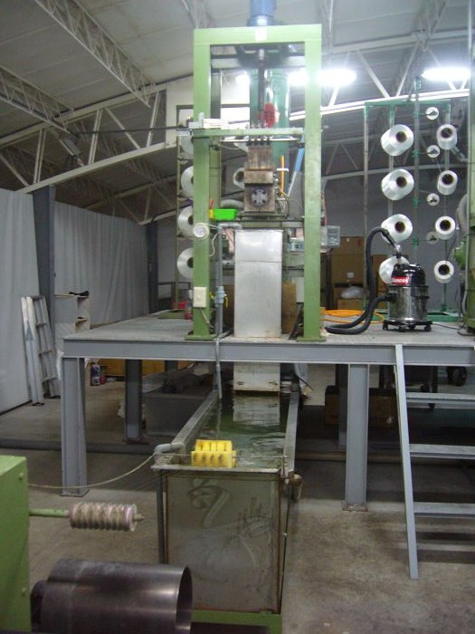
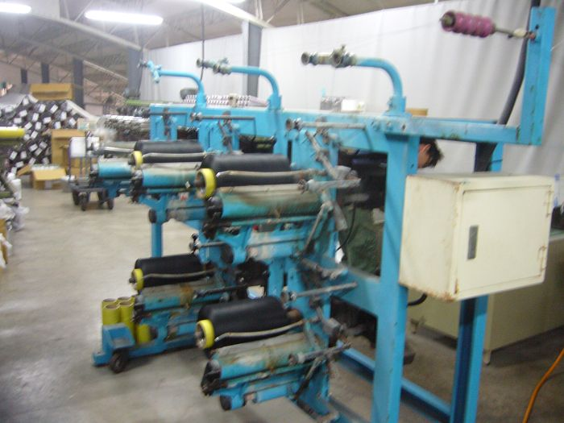
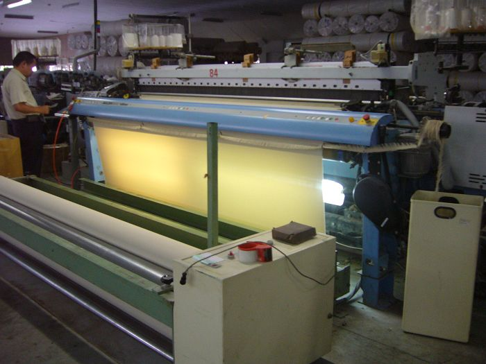
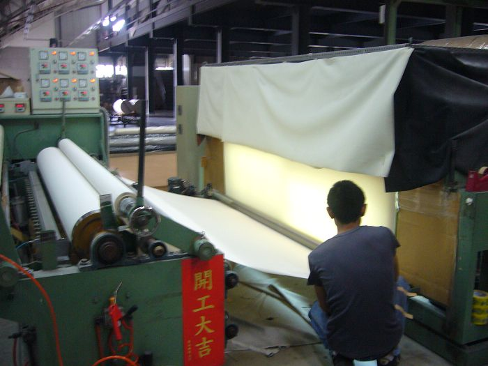
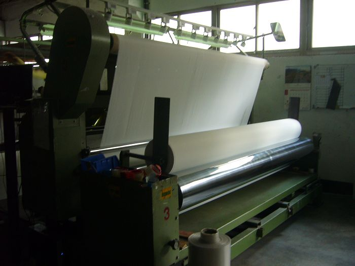
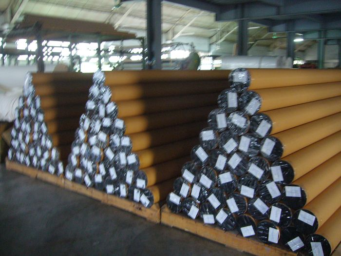

公 司 簡 介 : 創 立 於1 9 8 4 年 ， 以 國 產 織 布 機 生 產 基
礎 工 業 。 於1 9 9 1 年 增 購 織 布 機 等 設 備 ， 並 轉 型 為 家 飾 布 . 窗 簾 布 . 寢 具 用 布 ， 製
造 買 賣 。 更 於 2 0 0 7 年 擴 充 設 備 ， 生 產 多 樣 性 紡 織 品 ， 如 陽 光 面 料 及 寬 幅 胚 布 。
製 造 流 程 : P V C 造 粒 → 抽 紗→ 整 經 → 織 造 → 胚 布 檢 驗 → 定 型 → 分 裁 → 分 級 檢 驗 → 出 貨
  
第 一 張 是 抽 紗 的 機 器 ， 第 二 張 是 整 經 的 機 器， 第 三 張 是 織 造 的 機 器 。
  
第 四 張 現 在 是 在 分 裁 ，再 來 是 分 級 檢 驗 ， 最 後是 包 裝 出 貨 。
產 品 科 技 : 隔 熱 技 術 、 隔 絕 紫 外 線 、 抗 菌 防 霉 、 耐 雨 、 防 焰 。
雲 泰 興 業 股 份 有 限 公 司 、 地 址 : 彰 化 縣 線 西 鄉 中 華 路 80 巷 2 8 號
T E L : + 8 8 6 - 4 - 7 5 8 2 3 8 9
F A X : + 8 8 6 - 4 - 7 5 8 1 9 0 6
<--回寓埔村首頁 |